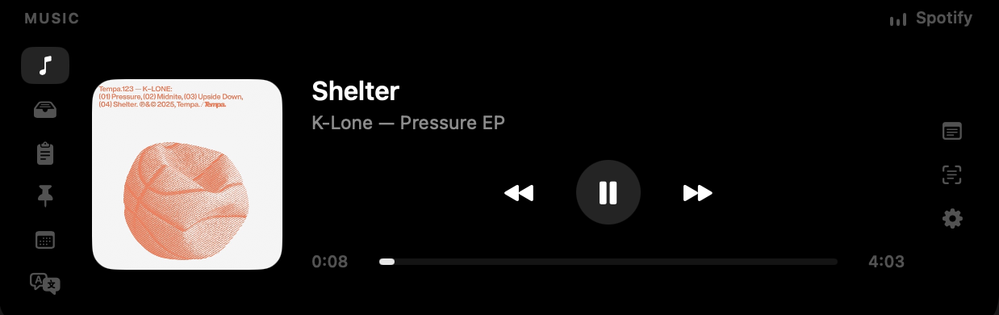

Cyclop — бесплатное приложение для чёлки с открытым кодом. В покое его не видно; при наведении оно раскрывается в панель с плеером, полкой для файлов, историей буфера обмена, заготовками, ближайшей встречей и офлайн-переводчиком.

Восемь вкладок. Каждая работает, только пока панель открыта — фон не крутится ради вкладки, на которую никто не смотрит.
Обложка, трек, исполнитель и ползунок, который правда перематывает. Источник — что угодно, что видит сама macOS: Apple Music, Spotify или ролик во вкладке браузера. В браузере настраивать нечего.
Перетащите файлы в чёлку — они там подождут. Вытащите карточку — файл уедет туда, куда бросили. ⌘-клик выделяет несколько и тащит их группой. Снимок экрана, скопированный в буфер, тоже попадает сюда — в том числе сделанный на айфоне.
Последние 40 копирований. Клик возвращает запись в буфер.
Список того, что надоело набирать заново: адрес, телефон, почта. Тот же список — обычный JSON-файл, который можно править любым редактором.
Ближайшая встреча на неделю вперёд, отсчёт до начала и кнопка подключения — Zoom, Meet, Teams и другие. У пересекающихся встреч своя кнопка у каждой.
Слева набираете, справа появляется перевод — офлайн, средствами самой macOS, без сервиса и аккаунта. Английский в русский и обратно; направление берётся из того, какими буквами написан текст.
Сценарий ползёт под камерой со скоростью, которую вы задаёте. Чёлка — единственное место на экране, которому телесуфлёр подходит: глаза остаются на объективе, а не уходят в окно ниже.
Черновик под рукой. Наведение приходит уже с кареткой, пустые заметки убираются сами.
Приложений для чёлки много. Вот то, чем меряется это, — и всё проверяется в исходниках.
| Ноль зависимостей | Только Swift, SwiftUI и AppKit. Ни менеджера пакетов, ни вложенных фреймворков. Всё приложение — 5800 строк, которые читаются за вечер. |
|---|---|
| Ноль разрешений | Ни Автоматизации, ни Универсального доступа, ни Записи экрана. Доступ к календарю — единственное, что запрашивается вообще, нужен одной вкладке, и системный диалог показывается по явному нажатию кнопки, а не при запуске. |
| Любой источник звука | Now Playing читается из самой macOS, поэтому ролик во вкладке работает так же, как плеер, — без расширений и коннекторов под каждое приложение. |
| Перевод офлайн | Перевод считается на устройстве, средствами macOS. Без ключа, без аккаунта, ничего не уходит с машины. |
| Ничего не собирается | Ни телеметрии, ни аналитики, ни отчётов о сбоях. Единственный исходящий запрос во всём приложении — необязательный поиск обложки для трека из Spotify. |
| Правда маленькое | 2,1 МБ на диске, около 40 МБ памяти, 0,0 % процессора, пока панель закрыта. |
.dmg со
страницы релизов,
откройте образ и перетащите Cyclop в «Программы».git clone https://github.com/akalikbergenov/cyclop.git
cd cyclop && ./Scripts/bundle.sh releaseДа. Там, где физического выреза нет, Cyclop рисует синтетическую чёлку ровно в высоту меню-бара и ведёт себя так же. На внешних мониторах тоже работает.
Ни одного, пока не откроете «Календарь», и это разрешение запрашивается нажатием кнопки на экране, который объясняет зачем, — не при запуске и не при открытии вкладки. Автоматизация, Универсальный доступ и Запись экрана не запрашиваются вообще.
*Единственное исключение: файл, положенный на полку из «Загрузок», «Документов» или с «Рабочего стола», — про него macOS спросит отдельно и только в момент открытия полки.
Бесплатно, под лицензией MIT, платной версии нет. Ни подписки, ни рекламы, ни аккаунтов, и ничего не собирается.
Любыми, которые видит сама macOS. Apple Music и Spotify работают, ролик во вкладке браузера тоже, включая YouTube. В браузер ничего ставить не нужно.
Ни телеметрии, ни аналитики. Единственный исходящий запрос — необязательный поиск обложки для трека из Spotify. Буфер, файлы, заметки, заготовки и сценарии остаются на машине.
Потому что образ подписан ad-hoc, без Apple Developer ID, и не нотаризован. Достаточно разрешить один раз в Системных настройках. Исходники открыты, если удобнее собрать самому.
Около 40 МБ плюс хелпер на 14 МБ и 0,0 % процессора, пока панель закрыта. Каждая вкладка работает, только пока на неё смотрят.
macOS 15 и новее, на Apple silicon и на Intel. Нижняя граница взялась от фреймворка перевода, на котором работает вкладка «Перевод».